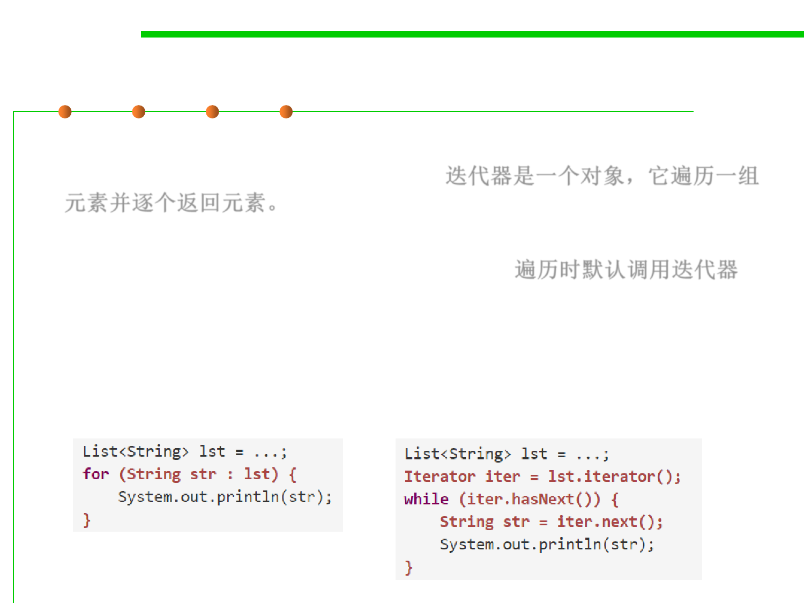

Iterator as a mutable type
3.1 Data Type and Type Checking
▪ Iterator is an object that steps through a collection of elements
and returns the elements one by one. 迭代器是一个对象，它遍历一组
元素并逐个返回元素。
▪ Iterators are used under the covers in Java when you’re using a for
(... : ...) loop to step through a List or array. 遍历时默认调用迭代器
▪ An iterator has two methods:
– next() returns the next element in the collection --- this is a mutator
method!
– hasNext() tests whether the iterator has reached the end of the collection.